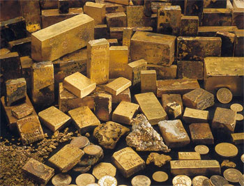

All'interno del palazzo dell'Accademia dei Nove Saggi si trova un istituto di credito privato chiamato "La Banca dei Maghi". In realtà tale istituto è una vera e propria banca privata destinata all'esclusivo uso degli iscritti all'Accademia dei Nove Saggi. La ricchezza dei maghi e le loro grosse necessità di investire somme di denaro nello studio e nella ricerca di arti magiche, nonché le tecniche magiche di sicurezza e riconoscimento ha reso "La Banca dei Maghi" un forte istituto di credito riconosciuto in tutto il Sud-Arelia. Nonostante la direzione della banca dei maghi sia operata da uno dei Nove Saggi che acquisisce il titolo di Governatore della stessa e nonostante i fondi dell'Accademia dei Nove Saggi siano gestiti dalla Banca dei Maghi, questo istituto di credito è in realtà un soggetto indipendente e separato dall'Accademia stessa. I grossi investimenti in tecniche magiche di sicurezza per il controllo dei documenti bancari effettuati in questo istituto hanno prodotto una serie di procedure che ormai si sono imposte come standard utilizzati dalle maggiori banche di tutto il Sud-Arelia.
La banca è aperta 24 ore su 24 tutti i giorni con i suoi sportelli situati al piano terra all'interno del palazzo dell'Accademia. Parte del primo piano terra, del primo piano e dei sotterranei del palazzo sono, infatti, occupati dai locali della Banca dei Maghi. Anche tutti i dipendenti della banca sono maghi interni iscritti all'Accademia, ai quali sono concesse in comodato temporaneo bacchette magiche di proprietà dell'Accademia dei Nove Saggi contenenti la magia di magic missile. Oltre a costoro, vi sono sempre tre guardie private, fighter del 4°-5° livello di esperienza che assicurano la sicurezza interna.
Gli iscritti all'Accademia
possono aprire un conto scegliendolo tra le tre categorie di conti offerti dalla
banca. I clienti sono suddivisi nelle seguenti categorie:
Cliente Novizio
un nuovo cliente;
Cliente Scelto
un cliente che possiede un conto
da almeno due anni;
Cliente Fedele un cliente
che possiede un conto da almeno cinque anni;
Cliente Eccelso
un cliente che possiede un conto da almeno otto anni.
VERDE
: Questo conto è principalmente utilizzato dai maghi meno esperti e che non
hanno bisogno di muovere spesso il capitale versato. Si tratta di un conto
estremamente economico e che ha principalmente funzione di deposito. Il denaro
depositato in questo conto può essere ritirato esclusivamente negli ultimi 5
giorni di ogni terza decade di ogni mese. Qualsiasi spesa effettuata
all'interno dell'Accademia dei Nove Saggi può essere immediatamente e senza
limiti detratta dalle somme depositate in questo conto.
Il costo di apertura di questo conto è pari a 5 corone, non sono previsti costi
di chiusura.
Una volta aperto il conto, il titolare dovrà stabile l'ammontare massimo di
denaro depositabile nello stesso (minimo 65 corone), in base a tale ammontare pagherà
anticipatamente ogni primo giorno del mese di Norio il costo annuo dello stesso
secondo il seguente schema (si arrotonda per eccesso alla moneta d'oro):
Cliente Novizio
1/65 dell'ammontare prescelto + 5 corone;
Cliente Scelto
1/70 dell'ammontare prescelto + 5
corone;
Cliente Fedele
1/75 dell'ammontare prescelto + 5 corone;
Cliente Eccelso
1/80 dell'ammontare prescelto + 5 corone.
Per depositare una somma maggiore rispetto a quella preventivata dovrà
stipularsi un nuovo contratto per l'apertura di un nuovo conto pagandone
immediatamente costo di apertura e costo per l'anno in corso.
I titolari di questo conto possono cambiare certificati di pagamento provenienti
da altre banche riconosciute pagando una tassa del 5% sul loro ammontare. I
titolari di questo conto possono, inoltre, cambiare denaro in moneta estera
pagando 5 corone + una tassa del 7% sull'ammontare cambiato (possono essere
cambiate fino a 50 corone per giorno di preavviso).
ROSSO
: Questo conto è principalmente utilizzato dai maghi che desiderano depositare
il loro denaro per poi utilizzarlo nelle spese correnti. Questo conto,
infatti, fornisce la possibilità di ritirare fino a 100 corone al giorno,
qualora si desideri effettuare un ritiro di ammontare superiore occorre dare un
preavviso di una decade.
Il costo di apertura di questo conto è pari a 15 corone.
Una volta aperto il conto, il titolare dovrà stabile l'ammontare massimo di
denaro depositabile nello stesso (minimo 500 corone), in base a tale ammontare
pagherà anticipatamente ogni primo giorno del mese di Norio il costo annuo dello
stesso secondo il seguente schema (si arrotonda per eccesso alla moneta d'oro):
Cliente Novizio
1/60 dell'ammontare prescelto + 10 corone;
Cliente Scelto
1/65 dell'ammontare prescelto +
10 corone;
Cliente Fedele
1/70 dell'ammontare prescelto + 10 corone;
Cliente Eccelso
1/75 dell'ammontare prescelto + 10 corone.
Per depositare una somma maggiore rispetto a quella preventivata dovrà
stipularsi un nuovo contratto per l'apertura di un nuovo conto pagandone
immediatamente costo di apertura e costo per l'anno in corso.
I titolari di questo conto possono cambiare certificati di pagamento provenienti
da altre banche riconosciute pagando una tassa del 4% sul loro ammontare. I
titolari di questo conto possono, inoltre, cambiare denaro in moneta estera
pagando 5 corone + una tassa del 5% sull'ammontare cambiato (possono essere
cambiate fino a 100 corone per giorno di preavviso).
BLU
: Si tratta del migliore conto della banca, utilizzato da iscritti dotati di un
certo capitale e dediti allo svolgimento di attività commerciale ed economiche.
Non vi sono limiti di ritiro per chi possiede questo conto. I titolari di questo
conto, inoltre, possono acquistare certificati di pagamento da poter firmare e
bollare al momento, ognuno di questi certificati costa 10 corone ed è accettato
come pagamento dalle principali banche areliane.
Il costo di apertura di questo conto è pari a 50 corone.
Una volta aperto il conto, il titolare dovrà stabile l'ammontare massimo di
denaro depositabile nello stesso (minimo 1000 corone), in base a tale ammontare
pagherà anticipatamente ogni primo giorno del mese di Norio il costo annuo dello
stesso secondo il seguente schema (si arrotonda per eccesso alla moneta d'oro):
Cliente Novizio
1/55 dell'ammontare prescelto + 25 corone;
Cliente Scelto
1/60 dell'ammontare prescelto +
25 corone;
Cliente Fedele
1/65 dell'ammontare prescelto + 25 corone;
Cliente Eccelso
1/70 dell'ammontare prescelto + 25 corone.
Per depositare una somma maggiore rispetto a quella preventivata dovrà
stipularsi un nuovo contratto per l'apertura di un nuovo conto pagandone
immediatamente costo di apertura e costo per l'anno in corso.
I titolari di questo conto possono cambiare certificati di pagamento provenienti
da altre banche riconosciute pagando una tassa del 3% sul loro ammontare. I
titolari di questo conto possono, inoltre, cambiare denaro in moneta estera
pagando 5 corone + una tassa del 3% sull'ammontare cambiato (possono essere
cambiate fino a 200 corone per giorno di preavviso).
I titolari di questo conto ottengono uno sconto su tutti i prodotti (non
sono compresi i servizi acquistati presso l'accademia come i corsi, i training e
l'accesso alle magie)
acquistati dai negozi accademici per spese minime di 100 corone. L'ammontare
dello sconto dipende dal grado di fedeltà del cliente:
Cliente Novizio
sconto del 5%.
Cliente Scelto
sconto del 6%.
Cliente Fedele sconto del
7%.
Cliente Eccelso
sconto dell'8%.
I titolari dei vari conti correnti possono accedere al credito fornito dalla Banca dei Maghi. Esistono due forme di credito:
Il
credito comune,
che è utilizzato dai maghi per acquisire disponibilità di denaro da utilizzare
come meglio ritenuto opportuno. L'ammontare del credito che può essere chiesto
sulla "fiducia" dipende dal livello del mago e dal tipo di conto posseduto
secondo la seguente tabella:
Conto VERDE:
85 g.p. per livello di esperienza raggiunto.
Conto ROSSO:
175 g.p. per livello di esperienza raggiunto.
Conto BLU:
350 g.p. per livello di esperienza raggiunto.
A questa cifra può aggiungersi il 50% del valore di tutti gli oggetti dati in
pegno che siano stati accettati e valutati dalla banca ed ivi depositati nonché
il 65% del valore di tutte le proprietà in questo modo ipotecate. Se il debito
non sarà saldato alla scadenza i beni pignorati e le proprietà ipotecate
diventeranno di proprietà della banca e dall'ammontare del debito sarà scalato
solo la quota concessa in credito per la garanzia di tale bene.
Sulle somme prese in prestito il mago dovrà pagare il
16% di interessi annui,
potendo chiedere di restituire il denaro ricevuto entro 1, 2 o 3 anni.
Ogni mago può ottenere un unico credito comune alla volta.
Il
credito agevolato,
può essere richiesto dai maghi unicamente per acquistare servizi all'interno
dell'accademia (non quindi prodotti in vendita presso la stessa) come training
di livello, insegnamenti, accesso alle magie, ecc... ecc... . L'ammontare del
credito che può essere chiesto unicamente "sulla fiducia" dipende dal livello
del mago e dal tipo di conto posseduto secondo la seguente tabella:
Conto VERDE:
125 g.p. per livello di esperienza raggiunto.
Conto ROSSO:
250 g.p. per livello di esperienza raggiunto.
Conto BLU:
500 g.p. per livello di esperienza raggiunto.
La somma presa in prestito dovrà essere interamente utilizzata in acquisto di
servizi e su tale cifra il mago dovrà pagare il
10% di interessi annui,
potendo chiedere di restituire il denaro entro 1 anno dall'ottenimento
del prestito.
Ogni mago può ottenere un unico credito agevolato alla volta.
Qualora un mago non riesca a restituire nei termini le somme di denaro a costui prestate "sulla fiducia", costui sarà obbligato a prestare immediatamente e gratuitamente la sua opera all'interno dell'Accademia fino a quando non avrà "pagato" alla banca con il suo lavoro (si consideri il salario mensile dovuto a costui ogni 30 giorni di lavoro) un ammontare di monete d'oro pari alla quota restante di prestito da restituire aumentata del 25%.
I titolari dei vari conti
correnti possono decidere di investire parte del loro denaro in modo sicuro
presso la Banca dei Maghi. L'investimento dovrà essere operato a gruppi di 100
corone e per periodi di 1, 2, 3, 4, o 5 anni. Alla fine del periodo prescelto
(il denaro non potrà essere ritirato precedentemente) il cliente riceverà per
ogni 100 monete d'oro investite il seguente ammontare di monete d'oro:
Investimento di 1 anno: 105 corone
Investimento di 2 anni: 112 corone
Investimento di 3 anni: 121 corone
Investimento di 4 anni: 132 corone
Investimento di 5 anni: 145 corone
I titolari dei vari conti
correnti possono anche affittare cassette di sicurezza (la Banca mantiene
estrema riservatezza su quanto in esse contenute):
Cassetta piccola (larga 40 cm. Alta 40 cm. Profonda 1 metro) Capacità : 70 lb.
Per un mese 5 corone
Per tre mesi 12 corone
Per un anno 40 corone
Multa per giorno di ritardo 5 scudi
Cassetta grande (larga 50 cm. Alta 50 cm. Profonda 1.20 metro) Capacità : 130 lb.
Per un mese 8 corone
Per tre mesi 22 corone
Per un anno 80 corone
Multa per giorno di ritardo 7 scudi
Camera blindata (larga 3 m. Alta 2.5 m. Profonda 3 m.) Capacità : 10000 lb. Con
cassetti con catenacci e vario arredo di mobilia.
Per un mese 100 corone
Per tre mesi 200 corone
Per un anno 500 corone
Multa per giorno di ritardo 4 corone
Il cliente perde la possibilità di accedere alla cassetta fino a che non paga la
multa per il ritardo cumulato nel pagamento. Trascorso un anno di ritardo nel
pagamento del fitto la cassetta viene svuotata e tutto il contenuto diventa di
proprietà della banca.